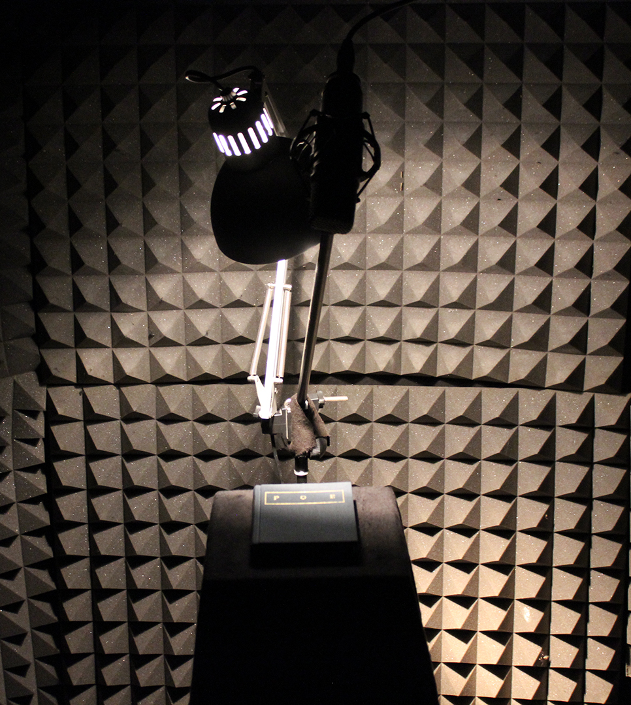

Installation, multi-media. Steel, duvetyne, audio foam, stand, condenser microphone, audio processor, computer, book. 2016. Installation view featuring the Berlin based poet Peter Reiling reading several poems by Edgar Allan Poe and a couple of sonnets by William Shakespeare as chosen by him. At the «Crematorium» in Berlin as part of the group show «Heptahedral,» 2016. Video courtesy of the author.
Aural haven
The piece converges on the variance between one’s perception of sound as a part of oneself and as a detached phenomenon occurring separately. It layers a further disambiguation focusing on the perception of inward and outward. Nested in a pavilion enclosed by an intensive auditory presence, «Aural Haven» secures a sanctuary from the bordering reality, all the while inverting the perception of surrounding actuality mid-step. The existential urgency of the oasis is amplified by the intensity of the environment it has been embedded in. One is tempted to remain within and allow an alternate perspective unto one’s aural awareness.
The piece is set in the middle of the exhibition space and consists of a round, black pavilion with a diameter of 3.5 m and height of 2.5 m. An omni-directional speaker is suspended from the top of the building down through the center of the pavilion and hangs on a 40 m long rope within the dome-like upper part of the structure. Acoustic foam panels cover the inside of the pavilion. The entrance is on one side, whereas on the opposite side is a pedestal on which sits a book of poems. A reading lamp illuminates the book. Above the book is a microphone, which outputs sound to the speakers in the gallery space.
Installation view at the «Crematorium» in Berlin as part of the group show «Heptahedral,» 2016. Photo courtesy of the author.
The book invites a visitor to open it and read, speak through the microphone. One is enclosed in the privacy of the pavilion. Within the intimate atmosphere one is safe to speak and experience one’s voice being reverberated in the wide-open gallery space. A private, hidden, closed off stage is present at one’s disposal.